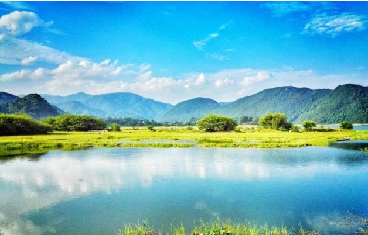
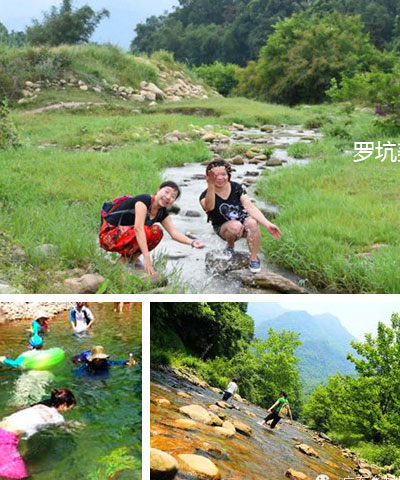
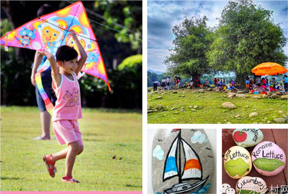

09:00—12:00 佛山出发韶关（全程2.5小时-3小时）
12:00—13:30 品尝罗坑农家菜
13:30—15:00 探望孤寡老人，送上暖暖心意
15:00—16:00 雪花岩一品茶香，参观制茶厂
16:00—18:30 罗坑草原安营扎寨，架起烤炉，去溪流边戏水游泳
18:30—19:30 草原上享受烧烤晚餐、拍美美的照片、放风筝、画石头
20:00—21:30 草原篝火、烧烤
第二天07:00—08:00 收拾行装，整理草地卫生
08:00—09:00 品尝农家早餐
09:00—11:30 到罗坑茶厂茶田感受亲自采茶的乐趣，当一回“我是小茶农“；茶地里捡乌鸡蛋，看水里生活的海狸鼠和山鸡（或09:00—11:30 神秘岩洞大探险）
11:30—12:50 中午享受罗坑原生态食材的特色农家饭
12:50—13:50 到农家养蜂场品味原汁原味的蜂蜜
13:50—15:00 自由活动，可到镇里采购山货
15:00—18:30 返回佛山（旅途游结束）
韶关市曲江区罗坑镇位于广东省韶关市曲江区西南部。境内林木茂密，有多种国家重点保护的珍稀动植物，是鳄蜥国家级自然保护区，这是目前 中国野生鳄蜥分布较集中、数量最多、栖息环境最好的地区。罗坑境内有较多古茶树，树龄最长的有1000多年，更有罗坑水库、船底顶山、峡 洞湿地等美不胜收的原生态美景，适合久居都市的你，远离城事烦扰，放松身心，与大自然共舞。
感受清凉溪水
韶关市曲江区罗坑镇位于广东省韶关市曲江区西南部，东连樟市镇，南接清远英德市英红镇、横石塘镇，西邻乳源县大布乡 ，北毗武江区江湾、龙归二镇。罗坑镇常年平均温度19.10℃，昼夜温差较大，降雨量丰富，属中亚热带季风气候。
感受清凉溪水
韶关市曲江区罗坑镇位于广东省韶关市曲江区西南部，东连樟市镇，南接清远英德市英红镇、横石塘镇，西邻乳源县大布乡 ，北毗武江区江湾、龙归二镇。罗坑镇常年平均温度19.10℃，昼夜温差较大，降雨量丰富，属中亚热带季风气候。
自驾（含：活动组织及服务费用、保险费用、晚上互动活动费用、草原烧烤、特色农家餐2餐、早餐1餐、茶园采茶品茶、矿泉水、流动更衣点设备）
488元/人 （费用不包括车费、帐篷费用）
儿童390元/人（费用不包括车费、帐篷费用）
购买帐篷费用：350元/套4人双层帐篷（含2M*2M双层帐篷1顶、2M*2M防潮垫1张、1个营灯）使用完后客人自己带走。
建议客户自己购买，市场价格4人帐篷在500元-700元之间。
【说明】：
A．保险是提前购买的，所以不支持退款。
B．缴费后如未能参与活动的，活动组织费用退还20%/人
【注意事项】：
1.本次活动为自驾游活动，需注意时间以及大队的安排。
2.活动发起方除活动项目内列明费用外，不额外收取其它费用。
3.客户在现场如产生其它费用均属于自我行为，与活动发起方无关。
4.本次活动请客户各自带备矿泉水及干粮，以防除正餐外，肚饿的情况出现。
5.参与活动的客户，活动发起方都会给予一份活动行程及安排，请尊守时间，过时不候。
1、微信报名：加乡村网微信gdxcwlx；
2、电话报名：SAM龙
固话: 020-87595266-809
手机：17098877232
3、QQ报名：3247381605
【报名贴士】：
1、报名需提供“车牌号码+真实姓名+身份证号码+手机号码”，例如用于购买保险!(报名资料保密，不会泄漏)
2、报名以交钱时间为准，即先交钱先留位置。请抓紧哦～